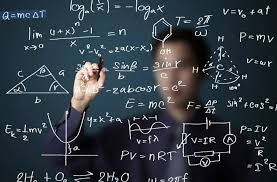
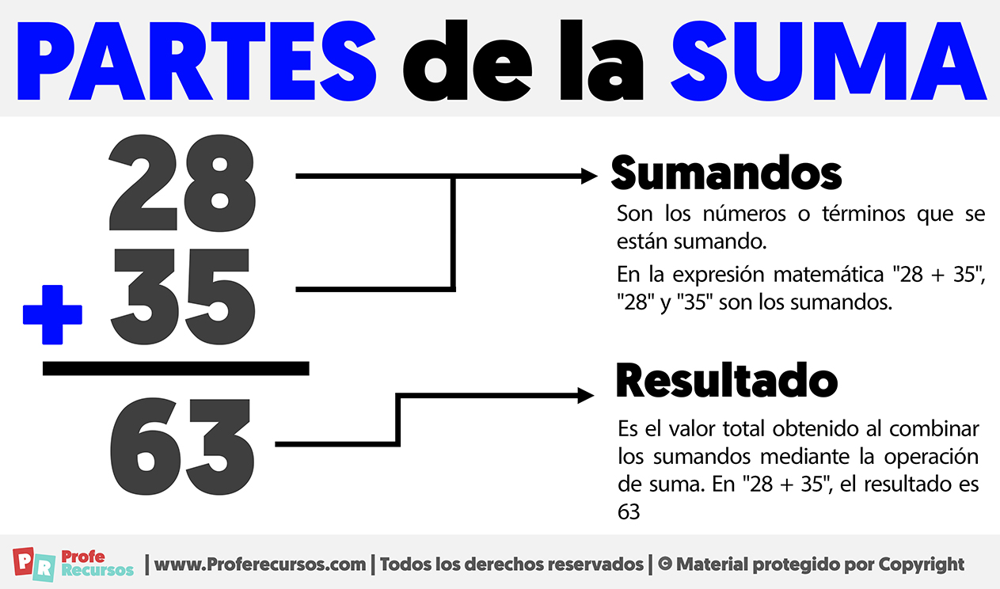
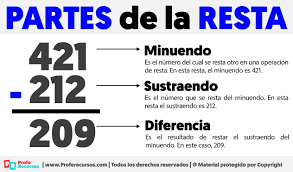
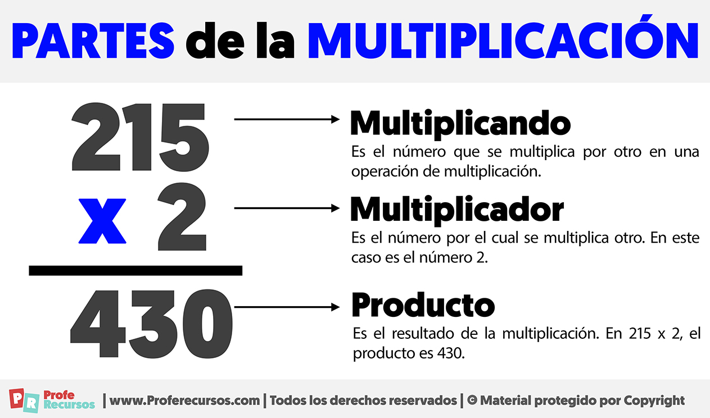

Las Matemáticas
¿Qué son las matemáticas?
Las matemáticas son una ciencia que estudia los números, las cantidades, las formas y las relaciones entre ellas. Nos ayudan a resolver problemas de la vida diaria, como contar dinero, medir distancias o calcular el tiempo. También son fundamentales en áreas como la tecnología, la ciencia y la ingeniería.

¿Qué son las sumas?
La suma es una operación matemática que consiste en agregar dos o más cantidades para obtener un resultado total. Es una de las operaciones básicas y se utiliza en la vida diaria, por ejemplo, al sumar precios, contar objetos o realizar cálculos simples.

¿Qué son las restas?
La suma es una operación matemática que consiste en agregar dos o más cantidades para obtener un resultado total. Es una de las operaciones básicas y se utiliza en la vida diaria, por ejemplo, al sumar precios, contar objetos o realizar cálculos simples.

¿Qué son las multiplicaciones ?
La suma es una operación matemática que consiste en agregar dos o más cantidades para obtener un resultado total. Es una de las operaciones básicas y se utiliza en la vida diaria, por ejemplo, al sumar precios, contar objetos o realizar cálculos simples.

¿Qué son las diviciones ?
La suma es una operación matemática que consiste en agregar dos o más cantidades para obtener un resultado total. Es una de las operaciones básicas y se utiliza en la vida diaria, por ejemplo, al sumar precios, contar objetos o realizar cálculos simples.
.png)
Video sobre computación
Para aprender más:
| Nombre | Enlace | Video de computación | Ver video |
|---|